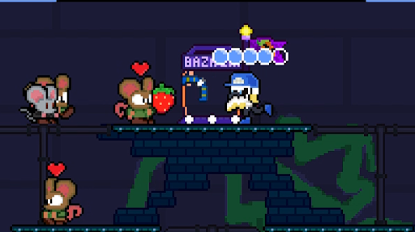
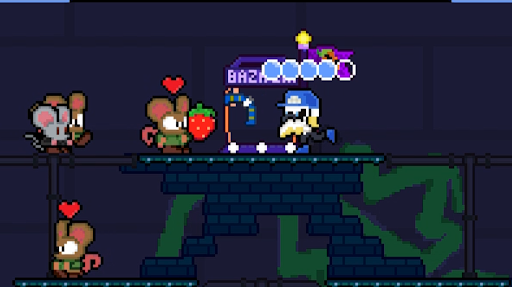

Bones and Marrow: Infested
Description:
Bones and Marrow: Infested is a game where you can choose 4 colorful characters with their own personalities and abilities. Go through 5 unique worlds with their own fun gimmick and boss, defeat the elites of the Vermin army and deposit their treasure, and meet your boss's quota before time up!
This game was made as a fun start-up project using GameMaker Studio 2. It later evolved into a larger-scale game and has been in development for about 2 years now. The game has been developed by me and my co-partner, and we are hoping to release this game on Steam.
Design Process:
This was the first game I programmed using GameMaker Studio. Understanding how to make well-made and dynamic systems, such as collisions or state machines, was one of the largest hurdles for me as a developer. Additionally, not knowing how to properly structure my code and also the lack of documentation caused a lot of backtracking and frustrations with my partner jumping in and working on the project.
Outcome:
This game is still in development and I still have a lot to learn, but so far I have picked up on better habits as a developer and have picked up on the importance of great documentation and flexible features. I love this project as it is something that has been really personal to my heart and a real testament to my status as a developer. Can't wait to share more!
Project Images:


 
